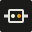

Connect a Google Workspace account to increase your API quota limit.
antigravity-proxy accounts add
Connect your Claude.ai account using Claude Code OAuth PKCE flow.
1. Open the authorization URL and approve in browser:
2. Paste authorization code from callback page:
claude login
Sign in with your Kimi Code account using device authorization.
Logged in as
Open the link and confirm this code:
Please complete authentication in the popup window.